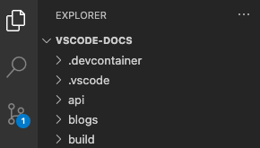
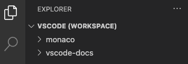
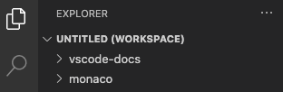
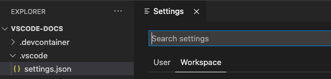
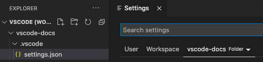

What is a VS Code "workspace"?
A Visual Studio Code "workspace" is the collection of one or more folders that are opened in a VS Code window (instance). In most cases, you will have a single folder opened as the workspace but, depending on your development workflow, you can include more than one folder, using an advanced configuration called Multi-root workspaces.
The concept of a workspace enables VS Code to:
- Configure settings that only apply to a specific folder or folders but not others.
- Persist task and debugger launch configurations that are only valid in the context of that workspace.
- Store and restore UI state associated with that workspace (for example, the files that are opened).
- Selectively enable or disable extensions only for that workspace.
You may see the terms "folder" and "workspace" used interchangeably in VS Code documentation, issues, and community discussions. Think of a workspace as the root of a project that has extra VS Code knowledge and capabilities.
Note: It is also possible to open VS Code without a workspace. For example, when you open a new VS Code window by selecting a file from your platform's File menu, you will not be inside a workspace. In this mode, some of VS Code's capabilities are reduced but you can still open text files and edit them.
How do I open a VS Code "workspace"?
The easiest way to open a workspace is using the File menu and selecting one of the available folder entries for opening. Alternatively if you launch VS Code from a terminal, you can pass the path to a folder as the first argument to the code command for opening.
Single-folder workspaces
You don't have to do anything for a folder to become a VS Code workspace other than open the folder with VS Code. Once a folder has been opened, VS Code will automatically keep track of things such as your open files and editor layout so the editor will be as you left it when you reopen that folder. You can also add other folder-specific configurations such as workspace-specific settings (versus global user settings), task definitions, and debugging launch files (see below in the workspace settings section).

A single-folder workspace opened inside VS Code
Multi-root workspaces
Multi-root workspaces are an advanced capability of VS Code that allows you to configure multiple distinct folders to be part of the workspace. Instead of opening a folder as workspace, you will open a <name>.code-workspace JSON file that lists the folders of the workspace. For example:
{
"folders": [
{
"path": "my-folder-a"
},
{
"path": "my-folder-b"
}
]
}

A multi-root workspace opened in VS Code
Note: The visual difference of having a folder opened versus opening a
.code-workspacefile can be subtle. To give you a hint that a.code-workspacefile has been opened, some areas of the user interface (for example, the root of the File Explorer) show an extra (Workspace) suffix next to the name.
Untitled multi-root workspaces
It is easy to add or remove folders in your workspace. You can start off by opening a folder in VS Code and then later add more folders as you see fit. Unless you already have opened a .code-workspace file, the first time you add a second folder to a workspace, VS Code will automatically create an "untitled" workspace. In the background, VS Code automatically maintains a untitled.code-workspace file for you that contains all of the folders and workspace settings from your current session. The workspace will remain "untitled" until you decide to save it to disk.

An untitled multi-root workspace opened in VS Code
Note: There is really no difference between an untitled workspace and a saved workspace other than the fact that an untitled workspace is automatically created for you for your convenience and will always restore until you save it. We automatically delete untitled workspaces (after asking you for confirmation) when you close a window in which an untitled workspace is opened.
Workspace settings
Workspace settings enable you to configure settings in the context of the workspace you have opened and always override global user settings. They are physically stored in a JSON file and their location depends on whether you opened a folder as a workspace or you opened a .code-workspace file.
Refer to the settings documentation for a comprehensive explanation of setting scopes and their file locations.
Single-folder workspace settings
Workspace settings will be stored in .vscode/settings.json when you open a folder as workspace.

The Settings editor when a folder is opened as workspace
Multi-root workspace settings
When you open a .code-workspace as workspace, all workspace settings will be added into the .code-workspace file.
You can still configure settings per root folder and the Settings editor will present a third setting scope called Folder Settings:

The Settings editor when a multi-root workspace is opened
Settings configured per folder will override settings defined in the .code-workspace.
Workspace tasks and launch configurations
Similar to how workspace settings are specific to a workspace, tasks and launch configurations can also be scoped to a workspace. Depending on whether you have a folder opened as workspace or a .code-workspace file, the location of workspace task and launch configurations will either be inside the .vscode folder or inside the .code-workspace file. In addition, task and launch configurations can always be defined at the level of a folder, even when you have opened a .code-workspace file.
Refer to tasks and debugging chapters for a more comprehensive overview of how to use tasks and launch configurations in VS Code.
Common questions
What is the benefit of multi-root workspace over a folder?
The most obvious advantage is that a multi-root workspace allows you to work with multiple projects that may not be stored inside the same parent folder on disk. You can pick folders from anywhere to add to the workspace.
Even if you are mainly working in a single-folder-based project, you can benefit from using .code-workspace files. You can store multiple .code-workspace files inside the folder to provide a scoped folder-view of certain aspects of the project depending on the scenario (for example client.code-workspace, server.code-workspace to filter out unrelated folders from the File Explorer). Since .code-workspace files support relative paths for the folders section, these workspace files will work for everyone independent of where the folder is stored.
Finally, if for some projects you want to apply the same set of workspace settings or tasks/launch configurations, consider adding these into a .code-workspace file and add/remove these folders from that workspace.
Why is VS Code restoring all untitled workspaces on a restart?
Untitled workspaces are designed to be something you must explicitly decide to keep or not. The first time an untitled workspace is created, VS Code adds the specified folders into the workspace file and also all existing workspace settings. This user data is always restored and displayed in a VS Code window until the untitled workspace is saved or deleted.
How do I delete an untitled workspace?
You can delete an untitled workspace by closing its window and dismissing the prompt to save the untitled workspace.
Can I use a multi-root workspace without folders
It is possible to leave the folders section of a .code-workspace file empty so that you end up with an instance of VS Code that does not show any root folders. You can still store workspace settings and even tasks or launch configurations in this case.
Does VS Code support projects or solutions?
VS Code doesn't have the concept of a "project" or "solution" as they are sometimes defined in other development tools, for example Visual Studio IDE. You may see the term "project" used in VS Code documentation but it usually means "the thing you're working on". Depending on your programming language or framework, the toolset itself may support something called a "project" to help define build configurations or enumerate included files.